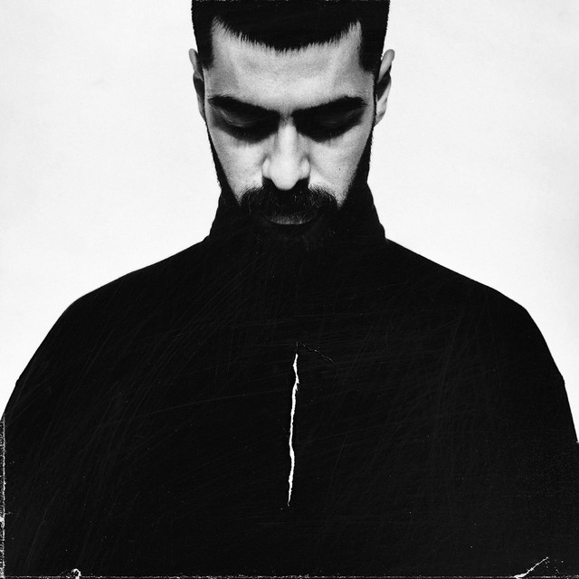

MiyaGI
Азамат Казбекович Кудзаев родился 13 декабря 1990 года во Владикавказе. Отец — хирург и руководитель «Центра ортопедии и эстетической хирургии» в Северной Осетии. На третьем курсе Азамат начал заниматься рэпом. Работал хирургом, но в скором времени бросил и стал заниматься музыкой. Занимается рэпом с 2007 года. В 2007—2013 гг. выступал под псевдонимом Shau, затем сменил его на MiyaGi. Свой псевдоним взял в честь мистера Мияги из фильма «Парень-каратист»[1][2].